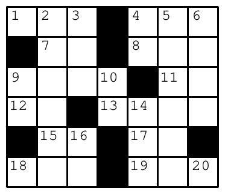

1994 Eighteenth Annual International Collegiate Programming Contest Finals · Problem C
A crossword puzzle consists of a rectangular grid of black and white squares and two lists of definitions (or descriptions). One list of definitions is for “words” to be written left to right across white squares in the rows and the other list is for words to be written down white squares in the columns. (A word is a sequence of alphabetic characters.) To solve a crossword puzzle, one writes the words corresponding to the definitions on the white squares of the grid.
The definitions correspond to the rectangular grid by means of sequential integers on “eligible” white squares. White squares with black squares immediately to the left or above them are "eligible." White squares with no squares either immediately to the left or above are also “eligible.” No other squares are numbered. All of the squares on the first row are numbered. The numbering starts with 1 and continues consecutively across white squares of the first row, then across the eligible white squares of the second row, then across the eligible white squares of the third row and so on across all of the rest of the rows of the puzzle. The picture below illustrates a rectangular crossword puzzle grid with appropriate numbering.

An “across” word for a definition is written on a sequence of white squares in a row starting on a numbered square that does not follow another white square in the same row. The sequence of white squares for that word goes across the row of the numbered square, ending immediately before the next black square in the row or in the rightmost square of the row.
A “down” word for a definition is written on a sequence of white squares in a column starting on a numbered square that does not follow another white square in the same column. The sequence of white squares for that word goes down the column of the numbered square, ending immediately before the next black square in the column or in the bottom square of the column. Every white square in a correctly solved puzzle contains a letter.
You must write a program that takes several solved crossword puzzles as input and outputs the lists of across and down words which constitute the solutions.
Each puzzle solution in the input starts with a line containing two integers r and c (1• r •10 and 1• c •10), where r (the first number) is the number of rows in the puzzle and c (the second number) is the number of columns. The r rows of input which follow each contain c characters (excluding the end-of-line) which describe the solution. Each of those c characters is an alphabetic character which is part of a word or the character "*", which indicates a black square. The end of input is indicated by a line consisting of the single number 0.
Output for each puzzle consists of an identifier for the puzzle (puzzle #1, puzzle #2, etc.) and the list of across words followed by the list of down words. Words in each list must be output one-per-line in increasing order of the number of their corresponding definitions. The heading for the list of across words is “Across”. The heading for the list of down words is “Down”. In the case where the lists are empty (all squares in the grid are black), the Across and Down headings should still appear.
2 2 AT *O 6 7 AIM*DEN *ME*ONE UPON*TO SO*ERIN *SA*OR* IES*DEA 0
puzzle #1: Across 1.AT 3.O Down 1.A 2.TO puzzle #2: Across 1.AIM 4.DEN 7.ME 8.ONE 9.UPON 11.TO 12.SO 13.ERIN 15.SA 17.OR 18.IES 19.DEA Down 1.A 2.IMPOSE 3.MEO 4.DO 5.ENTIRE 6.NEON 9.US 10.NE 14.ROD 16.AS 18.I 20.A